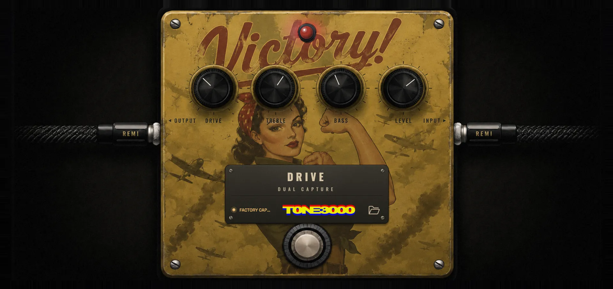
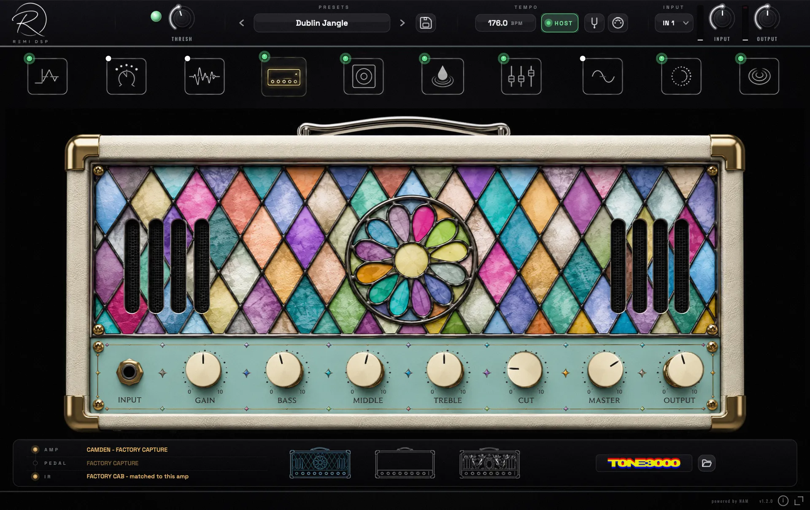
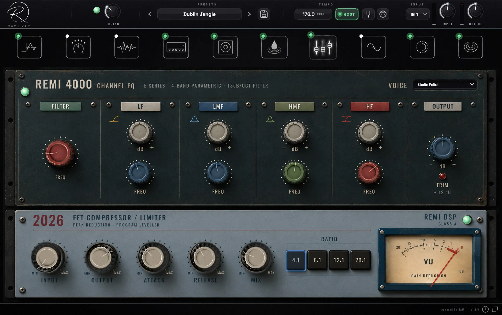
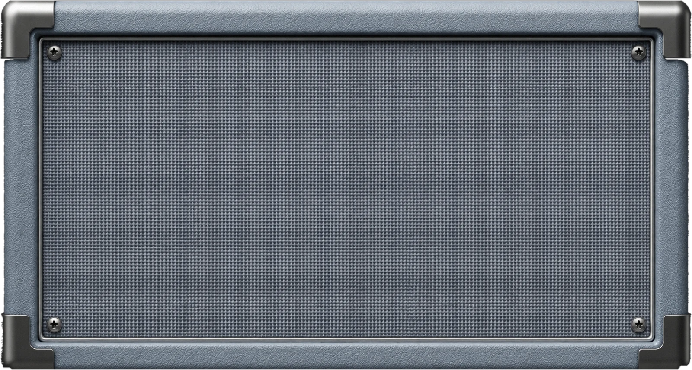

REMI DSP · MAINE · GUITAR RIG
Your entire guitar rig. Made to play.
Three amplifiers captured from the real things. A pedalboard that reorders itself. A studio strip that finishes the job. All of it level-matched by construction, so your level never jumps when you change amps.
Download for macOS
VST3 · AU · STANDALONE
NO ACCOUNT REQUIRED

REMI DSP v0.3.0 — CAPTURE ENGINE · 44.1–96 kHz
Not modeled.Not modeled. Captured.Captured.
Every sound in Maine is captured from a real, mic'd-up rig — the chime, the sag, the way it stiffens under a hard pick and blooms when you back off. Not an impression of an amplifier: a capture of that amplifier's own behaviour, with the cab and the room it was recorded through.
CAPTURED FROM REAL RIGS
CAB BAKED IN
LEVEL-MATCHED BY CONSTRUCTION
THE AMPLIFIERS
Three legends.
One window.
Camden
The chime that built the British Invasion — and the delay-soaked stadiums after it. One chimey British combo, pushed three ways.
CLEANDRIVENMAX
Portland
Four British-crunch voices in one head — Bloom, Chime, Thick and Lead, from '60s jangle to hot-rodded lead. Turn the voice, swap the stack.
BLOOMLEADTHICKCHIME
Katahdin
Two modern high-gain voices behind one perforated grille. Tight lows, endless sustain — palm mutes that land like a dropped anvil.
BLUERED


ALL CAPTURED FULL-RIG · CAB BAKED IN
THE PEDALBOARD
A board that reorders itself.
Ten slots, any order — drag a block, rewire the rig. Every pedal hand-drawn, photoreal, built from scratch.

THE STUDIO STRIP
Mix-ready, the moment you plug in.
Your tone lands finished, not raw: a REMI 4000 console EQ — E-series curves, 18 dB/oct filter — into a 2026 FET compressor with a live VU needle. The end of the chain, the start of a record.
4-BAND PARAMETRIC18 dB/OCT HPF
4:1 — 20:1PARALLEL MIX
THE CAB
Bring your own cabinet.
A straight impulse-response loader — drop in any IR and set the level. Nothing baked on top, nothing coloured in the way: your cab, exactly as captured.

THE ENGINE
Captured, not modeled.
THE CAPTURE ENGINE
Every amp and drive in the box is captured from a real, mic'd-up rig — level-matched by construction, so switching tones never jumps your level. The QUALITY knob trades detail against CPU when you need it back, and you can drop your own capture profiles straight in.
0Amplifiers
0Amp voices
0Captures
0Presets
Ten slots, any order
Gate, comp, drive, amp, cab, sauce, studio, chorus, delay, reverb — drag any block anywhere in the chain.
A reverb with depth
Early reflections into a 16-line modulated hall — three-dimensional, enveloping tails with a shimmer that actually blooms.
The "Sauce" finalizer
Tone shaping on steroids on a live before/after analyser — a synthesized sub-harmonic, a threshold-tracked high-end de-esser, transient punch and a dynamic de-harsh.
A tuner that locks
Strobe-accurate to a hundredth of a cent, and it tracks a soft note through hiss — the modern low-volume lock.
Any sample rate
44.1, 48, 88.2, 96 kHz — the amp captures resample to their trained rate and every effect follows the host. No 48k lock-in.
A gate that hunts hum
Phase-locked 50/60 Hz harmonic tracking kills single-coil buzz without eating your tails.
Presets are files
Every preset is a JSON file. Drop one in a folder and it appears in the menu — the folder is the menu.
Auto cab sense
Full-rig captures bypass the cab by themselves; amp-only captures pull the right IR.
Quality on a dial
One knob trades detail against CPU — full fidelity in the studio, featherweight on stage.
READY TO PLAY
Grab your rig.
Download, install, and plug in. No account required — the full version, every format.
macOS
MACOS 11+ · INTEL & APPLE SILICON
Download installerOne installer · App + AU + VST3
In the box
NO ACCOUNT · NO SIGN-UP
- Standalone, VST3 & Audio Unit
- 3 amps · 9 voices · 11 captures
- Pedalboard, studio strip & the Sauce finalizer
- 20 usable-tone presets · strobe tuner
- Runs at 44.1–96 kHz